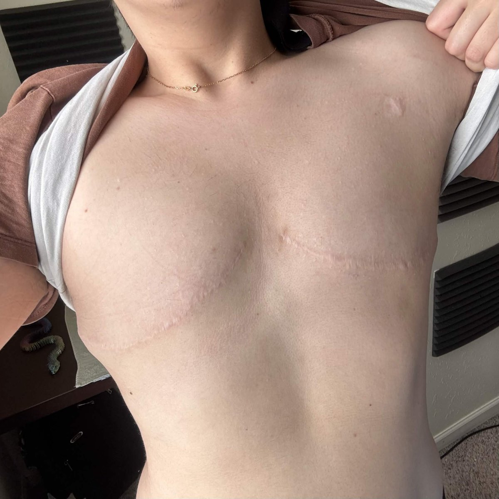

R·G_X3💤
@L0OKMe3
如果可以我想把我的胸弄成这样 然后纹上和图片里一样的图案

Caelum_Astros
@official_caelum
Today is my 4 Year Top Surgery Anniversary🥂
I wanted to say: If you are not trans, don’t fully understand it, or can’t even begin to grasp the concept, please know this;
Transitioning saves lives.
I remember 4+ years ago sitting down with my Mom and having to tell her https://t.co/52G1hOeweO